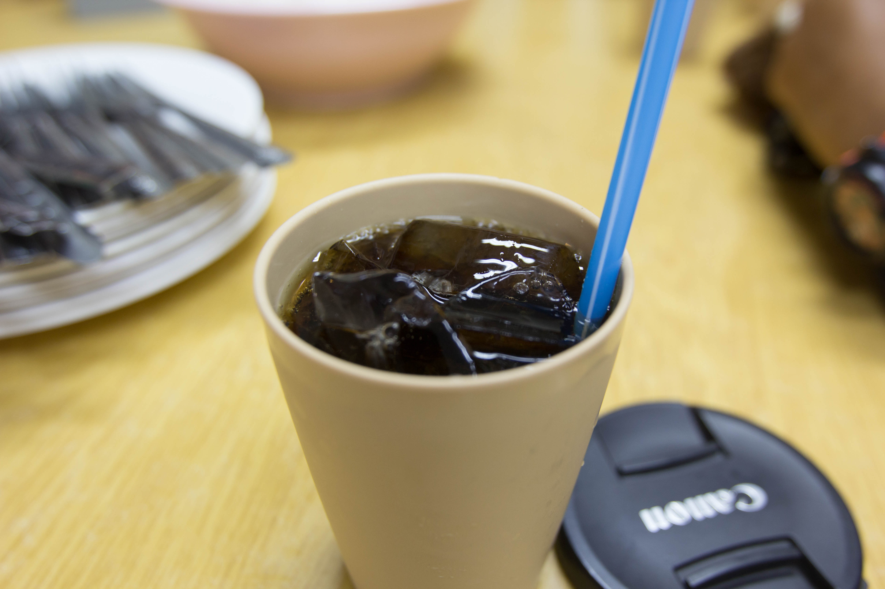
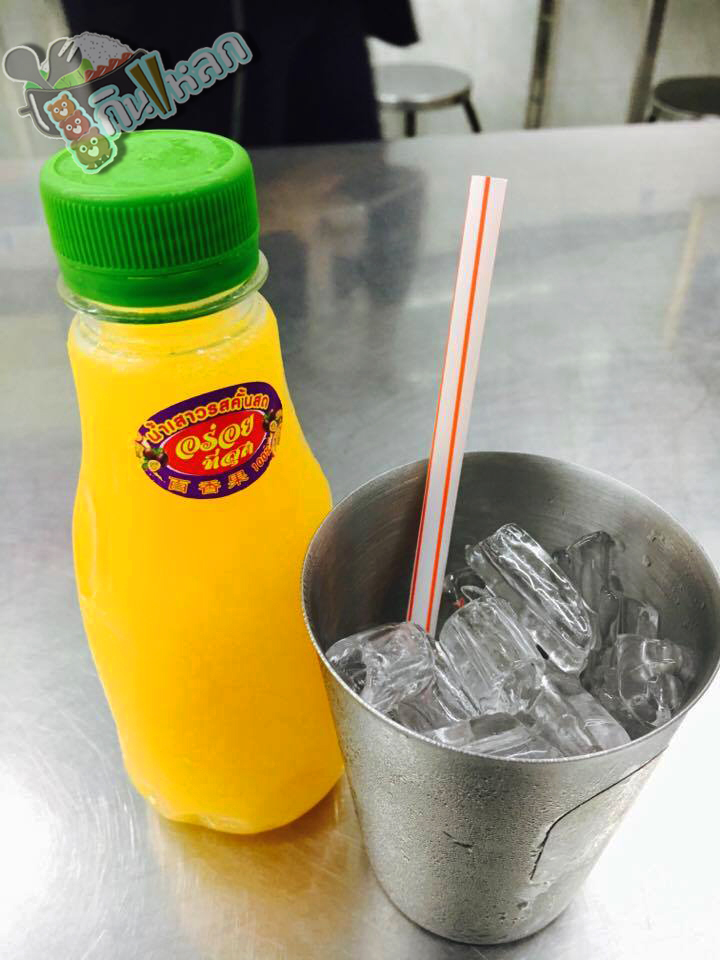
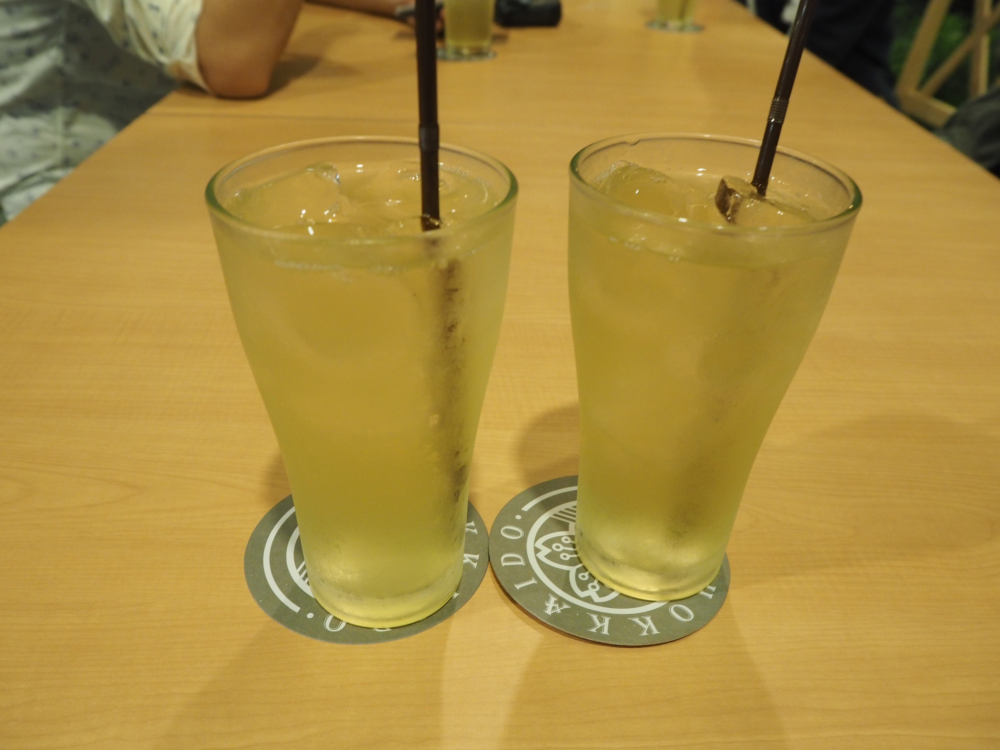

- เครื่องดื่มและของหวาน -
นมแพะร้อน
ติ่มซำชาบูระ
นมแพะร้อนๆ เหมาะกับการทานตอนเช้า หอมกลิ่นนมอ่อนๆ และความสดใหม่ของนมแพะ ของที่หาทานได้ค่อนข้างยากแต่สามารถมาสัมผัสได้ที่นี่...ติ่มซำชาบูระ
ชาเย็น
ติ่มซำชาบูระ
ชาเย็นรสเข้ม ทานควบคู่กับเมนูอิสลามต่างๆที่หลากหลาย เมนูเบสิกที่ทุ่มใจให้เพราะรสชาติชาที่ยังคงมีไม่ถูกนมกลบไปหมด อยากดับร้อนก็แวะไปได้เสมอ

น้ำอัดลม
ครัว ปะ-หยัด
น้ำอัดลมของทานร้านครัว ปะ-หยัด ซึ่งมีน้ำอัดลมพื้นฐานที่เป็นที่ต้องการของผู้บริโภคทั่วไป ทั้งยังมีน้ำผลไม้ที่มีการคัดสรรมาอย่างดีอีกด้วย
น้ำดื่มยี่ห้อ เจ๊ฮวง
ผัดไทยกระเพาะปลา ไทยอาคาร
โดดเด่นมากกกกก มีความครีเอทจากการทำน้ำดื่มเป็นของตัวเอง น้ำเปล่าแสนสะอาดที่ผ่านกระบวนการกรองอย่างดี รูปลักษณ์ที่น่ารัก แถมด้วยโลโก้ที่แสนโดดเด่น น้ำเปล่าเดิมๆกลับมีความพิเศษได้หากคุณใส่ใจ

น้ำเสาวรส
ผัดไทยกระเพาะปลา ไทยอาคาร
ร้านนี้นอกจากโดดเด่นด้วยอาหารแล้ว เครื่องดื่มชวนร้องว้าวมาก น้ำเสาวรสสดใหม่ บรรจุในขวดที่ออกแบบกันเอง ทานคู่กับผัดไทยก็ได้รสชาติที่ลงตัวดีเหมือนกัน
ชาเขียว
ฮอกไกโด
ทางร้านมีเครื่องดื่มที่หลากหลาย ทั้งชา น้ำผลไม้ทั่วไป รวมถึงเครื่องดื่มแอลกอฮอล์ หลักๆที่มักจะทานคู่กับอาหารญี่ปุ่นก็คือ ชาเขียว นั่นเอง ของทานร้านก็จะเป็นชาเขียวที่ได้กลื่นชามาแต่ไกล เมื่อได้จิบแล้วสาวกชาคงถูกใจในเอกลักษณ์เฉพาะของชาเขียว

ไอศกรีมรสทิรามิสุ
ฮอกไกโด
ที่นี่มีความพิเศษคือการทำไอศกรีมแฮนเมดของตัวเอง รสชาติมีให้เลือกหลากหลาย ทั้งรสชาติที่เฉพาะของไทยเอง หรือรสชาติสากลที่สามารถเลือกหยิบกันได้
ที่แนะนำเลยคือทิรามิสุ มีความขมๆของกาแฟ และความหวานเข้มๆของไอศกรีม อร่อยดี